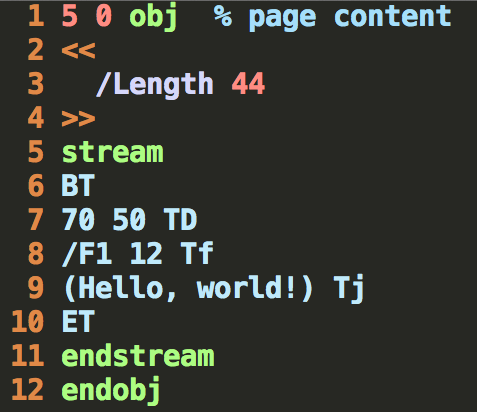
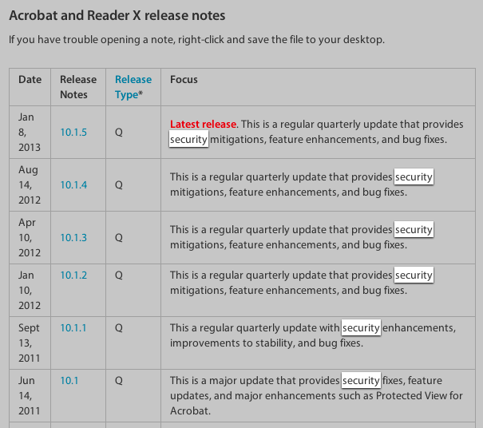
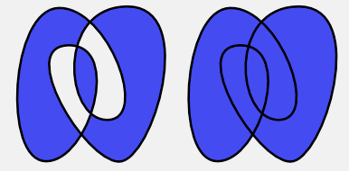
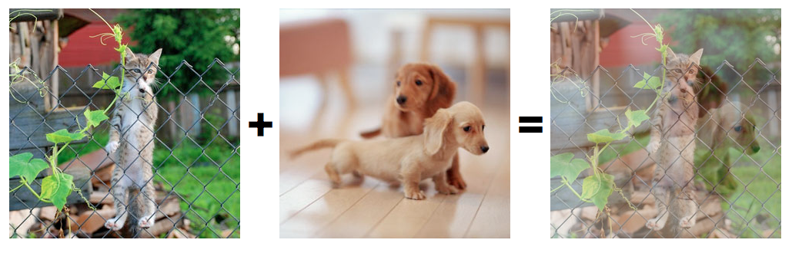
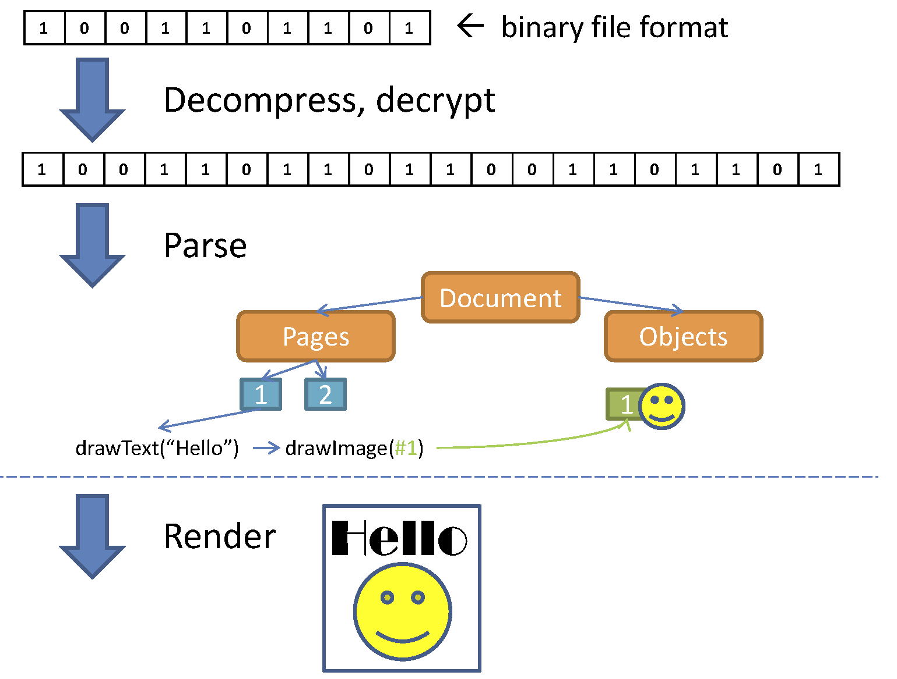
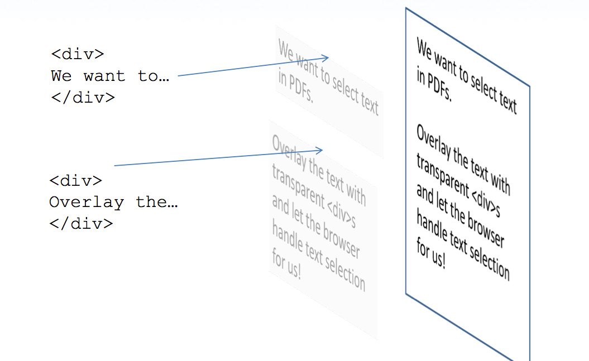
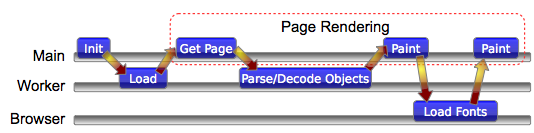

Presented by Brendan Dahl
Dropbox 2015
1991
camelot is introduced
clean elegant format
the unexpected
3D modeling, video, audio, attachments, flash!, javascript!2008
PDF becomes an ISO standard
what's inside a PDF?
file layout
Header
%PDF-1.7Body
2 0 obj
<<
/Type /Pagesxref Table
xref
0 6
0000000000 65535 fTrailer
trailer
<<
/Size 6
/Root 1 0 Rpage stream
watch a page draw
time goes by...
.
.
.
2011
firefox 4 launches
pdf.js is created
| Andreas Gal | Chris Jones |
why?
security

user
experience
performance
What's in a PDF?
text, images, vector graphics
push the limits

pdf.js
DEMO
grab the bytes
XHR2 Makes this Easy// prepare server request
var xhr = new XMLHttpRequest();
xhr.open('GET', url);
xhr.responseType = 'arraybuffer';
xhr.onload = function() {
var buffer = xhr.response; // buffer is ArrayBuffer
};
xhr.send(null);parsing & extracting
relatively easydrawing on canvas
most commands map nicely to canvas
- '2 3 m' =>
ctx.moveTo(2, 3); - '4 5 10 10 re' =>
ctx.rect(4, 5, 10, 10); - ...
drawing on canvas
some did not, so we're working on adding them to the canvas spec:
| dashed lines | |
|  | even odd fill |
|  | extended blend modes |
| masks |
more content
images
PDF supports every image format known to man kind
image decoding extraordinaire
Yury Delendik
jpg.js, jpx.js, jbig2.js
fonts
PDF also supports every font format known to man kind
more than just fonts, images:
| Patterns: Tiling & Gradients | |||||
|
Colorspaces | ||||
| f(x) => y | Functions |
Overview
[1]august 2011
we have a pdf viewer
(kind of)
text selection
text is really hard
- a letter isn't just a letter.
=> ababab
Char Code Glyph Text 0x66 fi 'f' 'i' - not all fonts have proper unicode values.
- Left to Right, Right to Left.
janky scrolling
do as much as possible in workers
[2]setTimeout
prioritize
april 2012
pdf.js lands in firefox nighly v14
not done yet
january 2013
february 2013
pdf.js makes it to firefox stable!
still not done
the present
tons of bug fixes
range request loading
incremental rendering
status
- supports the majority of common PDF features
- renders many PDFs quickly
- works in Firefox, Chrome, IE9+, Opera, Safari
- chrome extension (290K users)
- Default PDF viewer in Firefox
the future
lessons learned
- plan for asynchronous operations
- do as much possible in the worker(s)
- unit test
- be defensive
help out...
github.com/mozilla/pdf.js@pdfjs
thanks
questions?
References:
[1] Chris Jones' Presentation
[2] Yury Delendik's Presentation
[3] Car Pic
[4] Wiki PDF